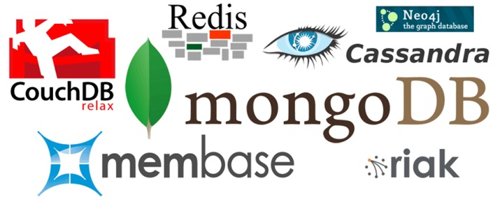
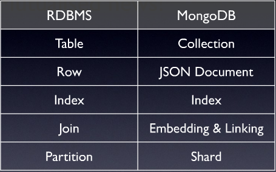

Conceito de NoSQL e Introdução ao MongoDB

Created by Dênis Nunes / @napalmdth
Quem sou Eu?
Técnico em Informática pela ETEC
2º Sem Desenvolvimento de Sistemas Eduvale
Trabalho com WebDev desde 2010
Sobre NoSQL
Todo Desenvolvedor deve conhecer NoSQL.
Como conheci o NoSQL.
O que é NoSQL.
O termo NoSQL.
Por que usar NoSQL?
Funcionalidades e forma de Modelagem diferenciadas
Escalabilidade Horizontal
Atende a necessidades específicas
Sistemas de Alta Performance
Modelos de Banco NoSQL
Chave - Valor
MemCached, Redis, Riak
Coluna
BigTable, Cassandra, HBase
Documento
SimpleDB, CouchDB, *MongoDB*
Grafo
Neo4J, OrienteDB(Híbrido)

Termos Técnicos MongoDB
JSON
{
"glossary": {
"title": "example glossary",
"GlossDiv": {
"title": "S",
"GlossList": {
"GlossEntry": {
"ID": "SGML",
"SortAs": "SGML",
"GlossTerm": "Standard Generalized Markup Language",
"Acronym": "SGML",
"Abbrev": "ISO 8879:1986",
"GlossSee": "markup"
}
}
}
}
}